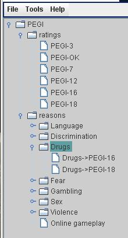

As was previously noted, Criteria elements are used to provide information about how a Reason (i.e., classification factor) is assessed in the context of a specific level of Rating. Another way to view Criteria is as an association between a specific Rating and a specific Reason. For this reason, the mechanisms for adding and deleting Criteria are different from the ones used to work with Ratings and Reasons:
To add a new Criteria you need to first select the appropriate Reason, then select the Rating from the list shown in the popup menu. For example, the following shows the navigation tree for the PEGI Rating System:

The tree has been expanded to display the list of defined Ratings, as well as sub-section specific to the 'Drugs' category. At this point only two criteria have been specified: one mapping the category to the PEGI-16 rating and another mapping to the PEGI-18 rating. Right-clicking on the Drugs node will display the following popup menu:

Only those Ratings that have not yet been mapped to the selected Reason are enabled for selection. Selecting one of these will result in a new node being added to the tree. At this point the Criteria editing panel will be shown in the Editor's main pane and a definitions and explanatory text may be entered. Note, however, that neither the ID nor the URI fields of a Criteria are editable by the user.
| < Previous | Top | Next > |